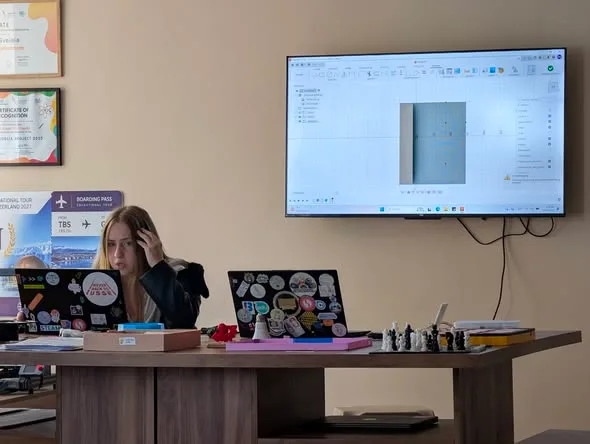
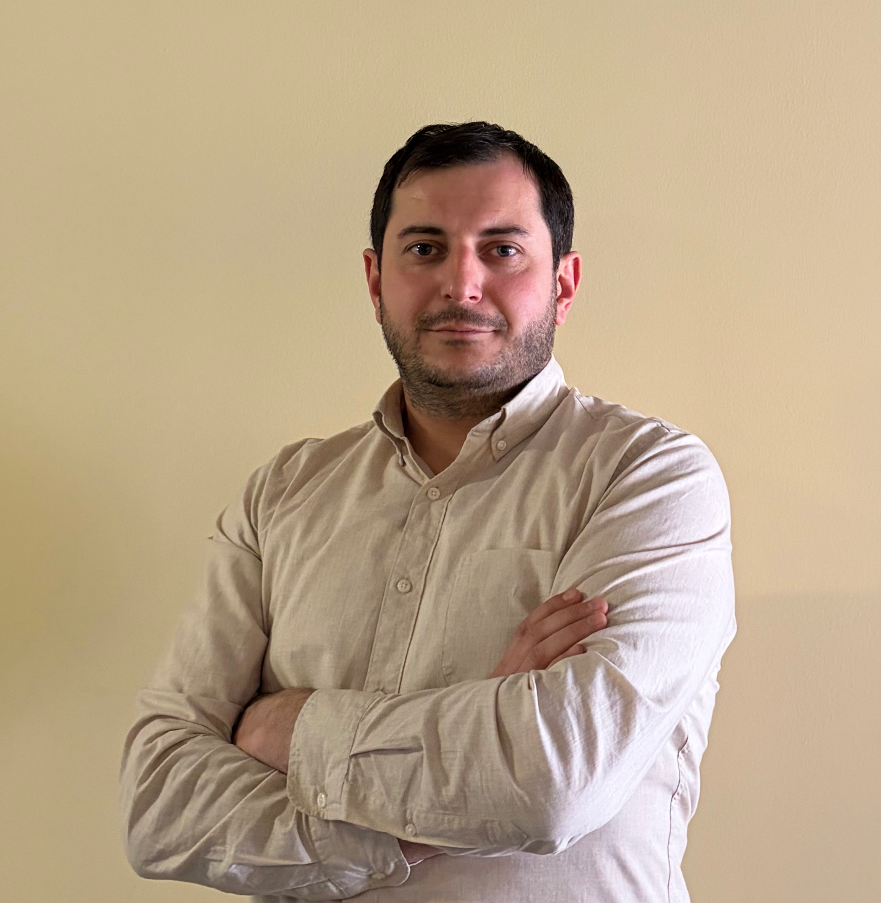
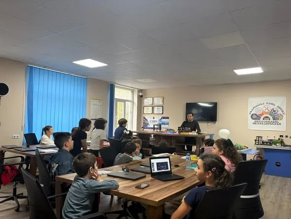
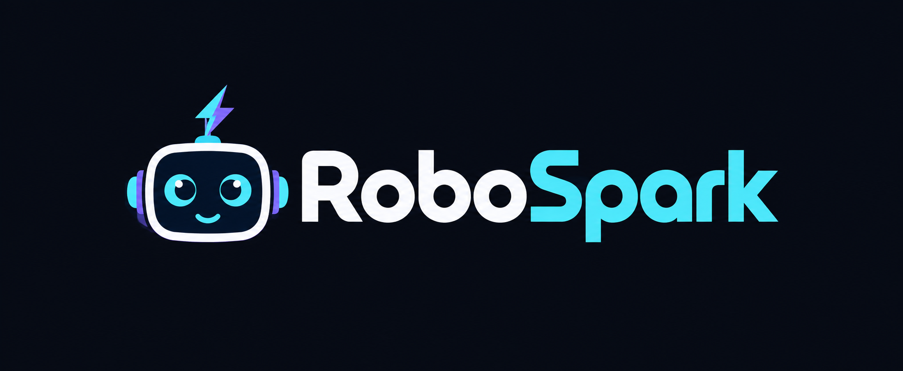

Fusion 360 — ვსწავლობთ ერთმანეთისგან
კლუბის მოსწავლე ლინდა კვარაცხელიამ თანატოლებს Fusion 360-ის ძირითადი ინსტრუმენტები გააცნო და პრაქტიკული დავალების შესრულების ინსტრუქციები გაუზიარა.
ვრცლად და ფოტოები ↗განათლება, რომელიც ქმნის
მე ვარ ცოტნე გვაჯაია
კომპიუტერული ტექნოლოგიების პედაგოგი
რობოტიკისა და STEM კლუბების ხელმძღვანელი
ადგილი, სადაც ცნობისმოყვარეობა ხვდება ტექნოლოგიას,
იდეები კი — პრაქტიკულ გამოცდილებას.
სსიპ ქალაქ ზუგდიდის N5 საჯარო სკოლა

01 / ჩემ შესახებ
ჩემი საქმიანობა კომპიუტერულ ტექნოლოგიებს, რობოტიკასა და STEM განათლებას აერთიანებს.
ზუგდიდის N5 საჯარო სკოლაში ვასწავლი კომპიუტერულ ტექნოლოგიებს და ვხელმძღვანელობ რობოტიკისა და STEM კლუბებს. მოსწავლეებთან ერთად ვიკვლევთ იდეებს, ვაწყობთ მოდელებს და ვსწავლობთ ექსპერიმენტებით.
ჩემთვის აქტივობა შედეგით არ მთავრდება. მნიშვნელოვანია, მოსწავლემ გაიაზროს, რატომ იმუშავა მისმა იდეამ, რა აღმოაჩინა და რას გააუმჯობესებდა შემდეგ ცდაზე.
ბოლო ამბები

კლუბის მოსწავლე ლინდა კვარაცხელიამ თანატოლებს Fusion 360-ის ძირითადი ინსტრუმენტები გააცნო და პრაქტიკული დავალების შესრულების ინსტრუქციები გაუზიარა.
ვრცლად და ფოტოები ↗
მოსწავლეებმა ხიდების კონსტრუქციები შექმნეს და გამოსცადეს ფორმის, მასალებისა და სიმტკიცის მნიშვნელობა.
ვრცლად და ფოტოები ↗
მოსწავლეებმა შეისწავლეს ფრენის პრინციპი, გამოსცადეს განსხვავებული კონსტრუქციები და შეცდომების გაანალიზებით გააუმჯობესეს მოდელები.
ვრცლად და ფოტოები ↗02 / კლუბები
ერთად ვსვამთ კითხვებს.
ერთად ვეძებთ პასუხებს.

რობოტიკის კლუბიპატარა აღმოჩენებიდან — საინჟინრო აზროვნებამდე. სივრცე IV–V კლასის მოსწავლეებისთვის, სადაც იდეებს ვცდით და გამოცდილებას ერთად ვაგროვებთ.
მეცნიერება, ტექნოლოგია, ინჟინერია და მათემატიკა ერთ სივრცეში. კლუბის პროექტებსა და საქმიანობის ისტორიებს აქ ეტაპობრივად გაგიზიარებთ.
03 / პროექტები და აქტივობები
ყოველ გამოცდილებას
თავისი აღმოჩენა აქვს.
გზაჯვარედინზე მოძრაობის შესწავლა და შუქნიშნის ელექტრონული მოდელი — დაკვირვებიდან პრაქტიკულ გამოცდამდე.
გაიცანი პროექტი ↗ხელოვნური ინტელექტის საფუძვლები, ტექსტური და გრაფიკული მოდელები და შემოქმედებითი აქტივობები.
გაიცანი პროექტი ↗მწვანე და ჩვეულებრივი სახურავების მოდელები, ტემპერატურაზე დაკვირვება და გარემოსდაცვითი იდეების გამოცდა.
გაიცანი პროექტი ↗საახალწლო იდეა და ელექტრონიკა — კომპონენტების აწყობა, შეერთებების მომზადება და განათების გამოცდა.
გაიცანი პროექტი ↗ხელნაკეთი ყვავილები და შემოქმედებითი მუშაობა — მასალების მომზადებიდან თაიგულის დეტალების აწყობამდე.
გაიცანი პროექტი ↗ზუგდიდის N5 საჯარო სკოლის ვირტუალური მოდელი — რეალური გაზომვებიდან Minecraft-ში ვიზუალური პროგრამირებით აშენებულ სკოლამდე.
გაიცანი პროექტი ↗სათბურის სასწავლო მოდელი — სენსორები, ავტომატური მართვის ლოგიკა და მაკეტის შექმნა ერთ პროექტში.
გაიცანი პროექტი ↗მედიაწიგნიერების პროექტი — ინფორმაციის წყაროს გადამოწმება, ვიზუალური მანიპულაციის ამოცნობა და კრიტიკული აზროვნება.
გაიცანი პროექტი ↗მომავლის სკოლის კამპუსის პროტოტიპი — მოსწავლეზე ორიენტირებული სივრცეები, 3D ბეჭდვა და ტექნოლოგიური იდეები.
გაიცანი პროექტი ↗სანაგვე ყუთის ტექნოლოგიური პროტოტიპი — კორპუსში ინტეგრირებული სენსორული კომპონენტით.
გაიცანი პროექტი ↗მზის პანელის ტრეკერის სასწავლო პროტოტიპი — პანელი, საყრდენი კონსტრუქცია და ელექტრონიკა ერთ მოდელში.
გაიცანი პროექტი ↗Arduino-ზე დაფუძნებული საკომუნიკაციო პროტოტიპი — ფიზიკური ღილაკები, ხმოვანი შეტყობინებები და Bluetooth-კავშირი საჭიროებების გამოსახატავად.
გაიცანი პროექტი ↗საკლასო ოთახიდან ვირტუალურ სივრცემდე — eTwinning-ის პროექტი, რომელიც აერთიანებს მონახულებული ადგილების ფოტოებს, პანორამულ კადრებსა და ვიდეომასალას.
გაიცანი პროექტი ↗როგორ დავიცვათ ფაქიზი საგანი სიმაღლიდან ვარდნისას? მოსწავლეებმა საკუთარი კონსტრუქციებით გამოსცადეს იდეები.
ელექტრონული კომპონენტების დაკავშირება და გამოცდა: ESP8266, აუდიომოდული და ეკრანი ერთ პროექტში.
მოსწავლეების იდეა: თავისუფალი საპარკინგე ადგილების დათვლა სენსორებით და რაოდენობის ჩვენება შენობის გარეთ LCD ეკრანზე.
მოსწავლეებმა შექმნეს და გამოსცადეს ქაღალდის თვითმფრინავები, შეადარეს ფრენის მანძილი და სტაბილურობა და გააუმჯობესეს კონსტრუქციები.
საინჟინრო გამოწვევა: ქაღალდის ხიდების შექმნა, კონსტრუქციის ფორმის გამოცდა და იდეების გაუმჯობესება.
გაიცანი პროექტი ↗STEM კლუბის პროექტების ისტორიები და ფოტოები აქ გამოჩნდება.
გაიცანი STEM კლუბი ↗04 / სწავლების მიდგომა
ყველაფერი ცნობისმოყვარეობით იწყება.
მიეცი იდეას ფორმა და დააკვირდი შედეგს.
ყოველი ცდა ახალი გამოცდილებაა.
05 / კადრები კლუბებიდან
აქტივობების რეალური ფოტოები
მალე დაემატება.
ვისწავლოთ ერთად
მოსწავლეებისთვის, მშობლებისა და მასწავლებლებისთვის — მარტივად ახსნილი ციფრული ხელსაწყოები.
06 / კონტაქტი
თანამშრომლობისთვის, კლუბების შესახებ კითხვებისთვის
ან საინტერესო იდეის გასაზიარებლად — მომწერე.